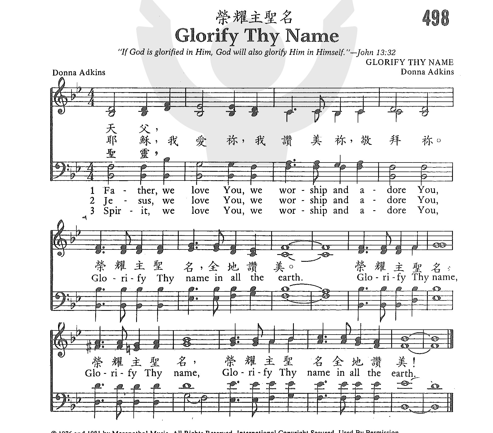

|
|
【榮耀你聖名】 |
|
[ Glorify Thy Name ] |
|
|
https://www.zanmeishige.com/tab/26070.html?songbook=1&index=498
 |
|
|
|
|

https://youtu.be/yv6sGlJTdj8 -
Glorify Thy Name (Father, we love you...) https://youtu.be/-sXUltnS6n0
Adkins, Donna 1940-
https://hymnary.org/person/Adkins_Donna
| Text: | Glorify Thy Name |
| Author: | Donna Adkins |
| Tune: | GLORIFY THY NAME |
| Composer: | Donna Adkins |
| Short Name: | Donna Adkins |
| Full Name: | Adkins, Donna, 1940- |
| Birth Year: | 1940 |
Tune Information
| Title: | GLORIFY THY NAME |
| Composer: | Donna Adkins (1976) |
| Meter: | Irregular |
| Incipit: | 33344 32212 33555 |
| Key: | B♭ Major |
| Copyright: | © 1976, 1981, Maranatha! Music. |
Notes
Scripture References:
st. = John 12:28; 17:1-5, Ps. 108:5, Isa. 6:3
Donna Adkins composed this fine song in 1976 and entitled it "Glorify Thy Name." The hymn was first published in a small booklet used at a pastor's conference and was later published by Maranatha! Music in 1981 in the collection Praise 5. It also appeared on the corresponding recording of the same name. Adkins writes the following about her composition of this hymn:
One morning while reading the seventeenth chapter of John, I began to meditate on the prayer of Jesus. I saw in a new way that Jesus was not only praying for His disciples, but for all who would follow Him in years to come. He was actually praying for me! I was impressed that Jesus was placing great emphasis on the unity in the Godhead. I also saw that it was very important to Jesus that the Father's name be glorified, and that there seemed to be a correlation between glorifying the Father's name and achieving unity. In that same moment I was inspired to sit at the piano and write "Glorify Thy Name."
With a Trinitarian structure in its three stanzas, this popular hymn is one of the finest praise choruses as well as prayer hymns from the mid-1970s. "Father, We Love You" first expresses our humble love and devotion to God and then offers Jesus' own prayer, "glorify your name" (see John 12:28; 17:1-5). God's name is glorified in the completion of Christ's ministry on earth, in the faithful testimony of God's family, the church, and in the praises of angels and saints in heaven. As we sing, we also pray for God's glory to arise from "all the earth" (see Ps. 108:5 and Isa. 6:3). Thus the text has a biblically cosmic ring: "all the earth" refers to our whole lives, all the nations, and, in fact, the entire creation!
Donna Whobrey Adkins (b. Louisville, KY, 1940) began singing in public at the age of two and by the age of twelve was playing piano for the family quartet. Her parents were church musicians and traveling gospel singers. Educated at Asbury College in Wilmore, Kentucky, and the University of Louisville, Kentucky, she has served on the music staff of several churches and currently serves as the secretary to the senior pastor of the Covenant Church of Pittsburgh, Pennsylvania.
Liturgical Use:
As a fitting choral invocation at the beginning of worship and a
beautiful prayer following sermons that set forth the glory of God; a
doxology for many occasions of worship.
--Psalter Hymnal Handbook, 1988
Glorify Thy Name
hymnstudiesblog

(photo of Donna Adkins and husband Jim)
“GLORIFY THY NAME”
“Father, glorify Thy name” (Jn. 12:28)
INTRO.:
This song was produced in 1975 after Donna had read the 17th chapter of John one
morning and begun to meditate on the prayer of Jesus. The Adkins family had
moved to a new place, with things far from familiar. She wrote, “I saw in a new
way that Jesus was not only praying for His disciples, but for all who would
follow Him in years to come. He was actually praying for me! I was impressed
that Jesus was placing great emphasis on the unity in the Godhead. I also saw
that it was very important to Jesus that the Father’s name be glorified, and
that there seemed to be a correlation between glorifying the Father’s name and
achieving unity. In that same moment I was inspired to sit at the piano and
write ‘Glorify Thy Name.’” The song was copyrighted in 1976 by Maranatha! Music
and appeared in a small booklet used at a minister’s conference. Later it was
published by Maranatha! Music in 1981 in their collection Praise 5. It also
appeared on the corresponding recording of the same name. Subsequently it was
included in The Hymnal for Worship and Celebration, published at Waco, TX, in
1986. The Adkins are parents of two grown children.
Among hymnbooks published by members of the Lord’s church for use in churches of
Christ, “Glorify Thy Name” has appeared in the 1994 Songs of Faith and Praise
edited by Alton H. Howard; the 1997 edition of the 1992 Praise for the Lord
edited by John P. Wiegand; the 2010 Praise Hymnal and the 2010 Songs for Worship
and Praise both edited by Robert J. Taylor Jr.; and the 2012 Psalms, Hymns, and
Spiritual Songs edited by Steve Wolfgang et. al.; in addition to Hymns for
Worship Revised (not in the original edition). In looking at the song in these
sources, I noted that most books have what I assume is the original wording
which uses the modern pronoun “You” in the first part but then switches to the
Elizabethan pronoun “Thy” in the second part, which I find interesting. However,
some books now use modern pronouns throughout and in fact title the song
“Glorify Your Name.”
The song is an attempt to give glory to the name of the Father, Son, and Holy
Spirit.
I. Stanza 1 addresses the Father
Father, we love You,
We worship and adore You.
Glorify Thy name in all the earth.
Glorify Thy name, Glorify Thy name,
Glorify Thy name in all the earth.
A. There is one God and Father who is above all: Eph. 4:6
B. We are to worship Him: Jn. 4:24
C. And He is to be glorified in our body and spirit: 1 Cor. 6:20
II. Stanza 2 addresses the Son
Jesus, we love You,
We worship and adore You,
Glorify Thy name in all the earth.
Glorify Thy name, Glorify Thy name,
Glorify Thy name in all the earth.
A. Jesus is the Christ, the Son of the living God: Matt. 16:16
B. As such, He also is worthy to be worshipped: Matt. 2:11
C. The name of the Lord Jesus Christ should be glorified in us: 2 Thess. 1:12
III. Stanza 3 addresses the Spirit
Spirit, we love You,
We worship and adore You.
Glorify Thy name in all the earth.
Glorify Thy name, Glorify Thy name,
Glorify Thy name in all the earth.
A. The Spirit is the third person of the Godhead, the Comforter: Jn. 14:26
B. There is no specific example of people “worshipping” the Spirit, but since
the Spirit is God, when we worship God generally, He would be included: Acts
5:3-4, Rev. 22:9
C. Since the primary function of the Spirit in redemption was to reveal the
word, when we glorify word we are in essence glorifying the work of the Spirit:
2 Thess. 3:1
CONCL.:
Another concern that I have about most “praise and worship” songs is the nature
of their lyrics. We are to “teach and admonish one another in psalms and hymns
and spiritual songs” (Colossians 3:16). Teaching and admonishing, at least in a
scriptural sense, requires words. The purpose of words is to say something, but
the fact is that the typical praise and worship songs simply do not say very
much. Some have referred to them as “7/11″ songs–seven words sung eleven times.
Aside from their subjective, emotionalistic characteristics, they also tend to
be very repetitious. Of course, all repetition is not necessarily wrong, and
some is even helpful to the memory. However, we need to be careful about “vain
repetitions” (Matthew 6:7). One of the criteria that I use in evaluating a hymn
is to read it over as poetry without thinking of the tune (admittedly, this can
sometimes be rather difficult). Does it say anything? Does it make sense?
Consider this example of an extremely popular “praise and worship” song. If you
are familiar with it, try to read it simply as poetry without thinking of the
tune. [Here I quote “Glorify Thy Name.”]
It is amazing that something which, purely as poetry, would likely be considered
practically as trite doggerel almost magically becomes a “spiritual song” when
set to a catchy tune! Yes, it is true that many of the older style gospel songs,
and especially some of the earlier twentieth century southern variety, are also
rather repetitious. One that was brought to my attention years ago is “The
Glory-Land Way.” If we sing all three stanzas, we will have sung the phrase “I’m
in the glory-land way” (or its equivalent) some fifteen times by the end of the
song. Yet compare this to “Glorify Thy Name,” again reading it simply as poetry
without thinking of the tune….It seems to me that even this somewhat egregious
example of gospel-song repetition at its worst comes across as nearly “classic
poetry” when stood side by side with some of the “praise and worship” songs.
It should be obvious that this is not one of my favorite religious songs, but we
certainly do need good hymns of genuine praise and worship by which we can tell
our God that we want to “Glorify Thy Name.”